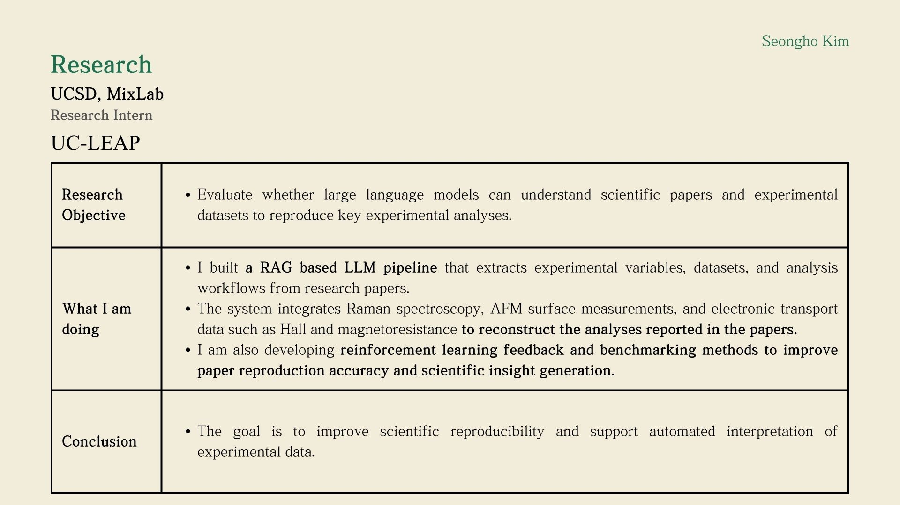
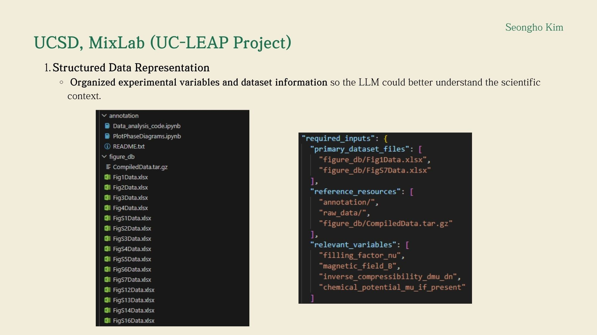

Research Experience
UC San Diego (MixLab / UC LEAP)
Research Intern, AI / LLM Systems
Overview
At UC San Diego MixLab, I work on LLM systems for scientific research automation and reproducibility. My research focuses on building multi agent AI pipelines that can extract scientific variables, datasets, and analysis procedures from papers, then use multimodal experimental data to reproduce and interpret published results.
Key Responsibilities
- Built a RAG based multi agent LLM pipeline to extract variables, datasets, and analysis workflows from scientific literature.
- Developed systems that use multimodal experimental data, including Raman spectroscopy, AFM, and electronic transport measurements, to reproduce scientific analyses.
- Worked on benchmarking and RL style feedback strategies to improve paper reproduction accuracy and scientific reasoning quality.
- Integrated material, surface, and transport signals into a unified AI workflow for automated experimental interpretation.
Achievements
- Contributed to a research direction that combines LLMs, retrieval systems, and multimodal scientific data for reproducible AI driven discovery.
- Helped create an end to end framework that moves beyond text summarization into executable scientific analysis and result reconstruction.
- Strengthened my experience in AI engineering through real world work on agent systems, grounded reasoning, and scientific data workflows.
Portfolio


